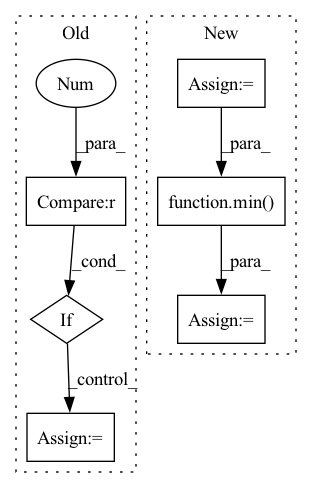

Pattern ID :3711
Before Change
gr_truth = gr_truth.detach().cpu().numpy()
//Save across batches:
if batch_idx == 0 :
pred_epoch = pred
gr_truth_epoch = gr_truth
else:
pred_epoch = np.concatenate((pred_epoch, pred), axis = 0)
gr_truth_epoch = np.concatenate((gr_truth_epoch, gr_truth), axis = 0)
//the following line to empty the cache is helpful in order toAfter Change
pred = sigmoid(out_dict["out"].data).detach().cpu().numpy()
gr_truth = gr_truth.detach().cpu().numpy()
start_row = batch_idx*self.batch_size
stop_row = min( start_row + self.batch_size, num_examples)
pred_epoch[start_row:stop_row,:] = pred //pred_epoch is e.g. [25355,80] and pred is e.g. [1,80] for a batch size of 1
gr_truth_epoch[start_row:stop_row,:] = gr_truth //gr_truth_epoch has same shape as pred_epoch
//the following line to empty the cache is helpful in order toIn pattern: SUPERPATTERN
Frequency: 4
Non-data size: 6
Instances Fragment ID: 13956213
Project Name: rachellea/pytorch-computer-vision
Commit Name: 92145aa25950504dbfaa3ac7ff86ddbeaa66a63f
Time: 2021-01-23
Author: rachel.draelos@gmail.com
File Name: src/run_experiment.py
M Class Name: DoExperiment
N Class Name: DoExperiment
M Method Name: iterate_through_batches(5)
N Method Name: iterate_through_batches(5)
M Parent Class: object
N Parent Class: object
M File Name: src/run_experiment.py
N File Name: src/run_experiment.py
M Start Line: 261
M End Line: 300
N Start Line: 263
N End Line: 300
Before Change
// 计算每张图片中理论上的负样本个数
neg_roi_per_this_image = self.n_sample - pos_roi_per_this_image
neg_roi_per_this_image = int(min(neg_roi_per_this_image, neg_index.size))
if neg_index.size > 0 :
neg_index = np.random.choice(neg_index, size=neg_roi_per_this_image, replace=False)
// 将正负样本的roi索引合并到一起
keep_index = np.append(pos_index, neg_index)After Change
// 获取那些IOU大于pos_iou_thresh的roi索引
// pos_index = np.where(max_iou >= self.pos_iou_thresh)[0]
pos_index = torch.nonzero(max_iou >= self.pos_iou_thresh)
pos_num = pos_index.numel()
pos_roi_per_this_image = int(min(pos_roi_per_image, pos_num))
if pos_num > 0: // 兼容 0-d tensor
// pos_index = np.random.choice(pos_index, size=pos_roi_per_this_image, replace=False)
pos_index = pos_index[torch.randperm(pos_num)[:pos_roi_per_this_image]]
// 获取那些IOU在[neg_iou_thresh_lo, neg_iou_thresh_hi)区间的roi索引
// 其实这里感觉分配的不是很合理,因为IOU=0.49与0.51在数值上区别很小.人眼更是几乎看不出来(除非写轮眼) TODO 待实验 hi↑ lo↓
// neg_index = np.where((max_iou < self.neg_iou_thresh_hi) & (max_iou >= self.neg_iou_thresh_lo))[0]
neg_index = torch.nonzero((max_iou < self.neg_iou_thresh_hi) & (max_iou >= self.neg_iou_thresh_lo))
neg_num = neg_index.numel()
// 计算每张图片中理论上的负样本个数
neg_roi_per_this_image = self.n_sample - pos_roi_per_this_image
neg_roi_per_this_image = int(min( neg_roi_per_this_image, neg_num) )
if neg_num > 0:
// neg_index = np.random.choice(neg_index, size=neg_roi_per_this_image, replace=False)
neg_index = neg_index[torch.randperm(neg_num)[:neg_roi_per_this_image]] Fragment ID: 13956196
Project Name: pangkun248/faster-rcnn-pytorch
Commit Name: 811d49713cf13070465c16e51d96db0077647739
Time: 2021-08-26
Author: 39581901+pangkun248@users.noreply.github.com
File Name: utils/creator_tool.py
M Class Name: ProposalTargetCreator
N Class Name: ProposalTargetCreator
M Method Name: __call__(4)
N Method Name: __call__(6)
M Parent Class: object
N Parent Class: object
M File Name: utils/creator_tool.py
N File Name: utils/creator_tool.py
M Start Line: 176
M End Line: 224
N Start Line: 231
N End Line: 281
Before Change
ts = np.random.randint(0, self.T, size=(self.n_time_masks, 2))
for t, mask_end in ts:
// avoid randint range error
if len_spectro - t <= 0 :
continue
t_zero = random.randrange(0, len_spectro - t)
// avoids randrange error if values are equal and range is empty
if t_zero == t_zero + t:
continue
mask_end += t_zero
if replace_with_zero:
cloned[t_zero:mask_end] = 0
else:After Change
max_frames = cloned.shape[0]
max_t = int(max_frames * self.max_t_ratio)
for i in range(self.n_time_masks):
start = random.randint(0, max_frames - 1)
length = random.randint(1, max_t)
end = min( max_frames, start + length)
if replace_with_zero:
cloned[start:end, :] = 0
else:
cloned[start:end, :] = cloned.mean() Fragment ID: 13956193
Project Name: yeyupiaoling/masr
Commit Name: 15d97fe0e0042abc1e6bfedadb35dc826ed4aed3
Time: 2022-09-28
Author: yeyupiaoling@foxmail.com
File Name: masr/data_utils/augmentor/spec_augment.py
M Class Name: SpecAugmentor
N Class Name: SpecAugmentor
M Method Name: mask_time(3)
N Method Name: mask_time(3)
M Parent Class: object
N Parent Class: object
M File Name: masr/data_utils/augmentor/spec_augment.py
N File Name: masr/data_utils/augmentor/spec_augment.py
M Start Line: 132
M End Line: 152
N Start Line: 115
N End Line: 125
Before Change
url = f"{self._API_PREFIX}/{name}/records/:search?limit={self.DEFAULT_SCAN_SIZE}"
query = self._parse_query(query=query)
if limit == 0 :
limit = None
request = {
"fields": list(projection) if projection else ["id"],After Change
if limit and limit < 0:
raise ValueError("The scan limit must be non-negative.")
batch_size = self.DEFAULT_SCAN_SIZE
limit = limit if limit else math.inf
url = f"{self._API_PREFIX}/{name}/records/:search?limit={{limit}}"
query = self._parse_query(query=query)
request = {
"fields": list(projection) if projection else ["id"],
"query": query,
}
if id_from:
request["next_idx"] = id_from
with api_compatibility(self, min_version="1.2.0"):
request_limit = min( limit, batch_size)
response = self.http_client.post(
url.format(limit=request_limit),
json=request,
) Fragment ID: 13956188
Project Name: recognai/rubrix
Commit Name: f5834a5408051bf1fa60d42aede6b325dc07fdbd
Time: 2023-03-01
Author: 37621491+tomaarsen@users.noreply.github.com
File Name: src/argilla/client/apis/datasets.py
M Class Name: Datasets
N Class Name: Datasets
M Method Name: scan(5)
N Method Name: scan(5)
M Parent Class: AbstractApi
N Parent Class: AbstractApi
M File Name: src/argilla/client/apis/datasets.py
N File Name: src/argilla/client/apis/datasets.py
M Start Line: 178
M End Line: 206
N Start Line: 177
N End Line: 208